“Normalize wearing bralettes as tops!” The phrase is often touted by Galex,
who wears a bralette even to her 21A.501 (Art, Craft, Science) class. It is in this class that she encounters the lacemakers,
who exlaim: “those bralettes… barely cover anything. I’m worried how things may pan out for you.”
They take the bralettes from her, and unwind the edges back into threads.
They weave a new pattern to show her who she reminds them of.

The art (craft? science?) of lacemaking:
From wikipedia, “Bobbin lace is a lace textile made by braiding and twisting lengths of thread, which are wound on bobbins to manage them. As the work progresses, the weaving is held in place with pins set in a lace pillow, the placement of the pins usually determined by a pattern or pricking pinned on the pillow.”
Twist on the pins and continue straight otherwise!